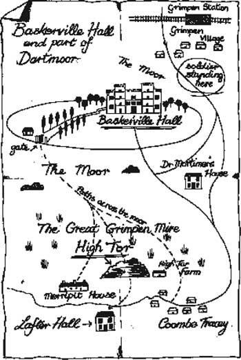

Listen to Part 1:
8

Báo cáo đầu tiên của Tiến sĩ Watson
Baskerville Hall
Dartmoor
13 tháng 10 năm 1889
Sherlock Holmes thân mến,
Tôi đã viết thư và kể cho anh nghe về Baskerville Hall cũng như những người sống ở đây. Bây giờ tôi có thêm một số thông tin sự thật muốn nói với anh. Trước hết, tôi sẽ vẽ bản đồ khu vực này. Nó sẽ giúp anh hiểu câu chuyện của tôi hơn.
Baskerville Hall cách Làng Grimpen khoảng hơn 3 km về phía tây nam. Tôi đi bộ đến làng để gửi thư.
Có rất nhiều cây xung quanh Hội trường và một lối đi dài dẫn đến một ngôi nhà mùa hè nhỏ trong vườn. Sir Charles Baskerville đã chết gần ngôi nhà mùa hè. Tôi đã đánh dấu cổng trên bản đồ. Đó là nơi Sir Charles đứng và hút xì gà. Cổng mở ra cánh đồng hoang.
Listen to Part 2:
Tôi đã kể cho anh nghe về những người hàng xóm rồi. Tiến sĩ Mortimer sống gần đó, khoảng nửa đường giữa Làng Grimpen và Coombe Tracey.
Tôi đã gặp gia đình Stapletons. Nhà họ cách Hội trường khoảng 5 km. Nó nằm ở phía bên kia High Tor.
Có một người đàn ông tôi chưa gặp. Nhưng Tiến sĩ Mortimer đã kể cho tôi nghe về ông ta. Tên ông ta là Frankland và ông ta sống tại Lafter Hall. Ông ta có một chiếc kính viễn vọng lớn và rất thích thiên văn học. Ông ta dùng kính viễn vọng của mình để ngắm các ngôi sao.
Vài ngày gần đây, ông ta không ngắm sao nữa. Ông ta đã dõi mắt về phía cánh đồng hoang. Ông ta nhìn về cánh đồng hoang vì cảnh sát vẫn chưa bắt được kẻ giết người, Selden. Ông Frankland quan sát cánh đồng hoang để tìm người lạ. Nhưng tôi không nghĩ rằng Selden đang ẩn nấp trên cánh đồng hoang. Không có thức ăn và thời tiết bây giờ rất lạnh.

Sir Henry lo lắng về gia đình Stapletons. Ngài ấy nghĩ rằng kẻ giết người có thể đột nhập vào nhà họ. Ngài ấy đã đến thăm Cô Stapleton nhiều lần và họ đã trở thành bạn tốt của nhau. Nhưng Ông Stapleton là một người kỳ lạ. Ông ta không thích Sir Henry đến thăm em gái mình.
Bây giờ, tôi xin nói đôi lời về Barrymore, người hầu tại Baskerville Hall. Anh ta trông giống như người đàn ông chúng ta thấy trong chiếc xe ngựa ở London. Anh còn nhớ không – người đàn ông đã theo dõi Sir Henry và Tiến sĩ Mortimer đến Phố Baker. Tôi đã nói với Sir Henry suy nghĩ của mình và ngài ấy đã gọi Barrymore và hỏi anh ta, "Anh có đến London mới đây không?"
Barrymore bảo anh ta chưa từng đến London trong đời. Ngoài ra, câu hỏi của Sir Henry còn khiến anh ta tức giận. Anh ta nói mình muốn rời khỏi Baskerville Hall.
Sir Henry bảo ông ấy xin lỗi. Ngài ấy đã tặng Barrymore một số quần áo và Barrymore rất vui. Barrymore và vợ đã cảm ơn Sir Henry rất nhiều về số quần áo đó.
Sau đó, tối hôm qua, tôi đã nhìn thấy một điều rất kỳ lạ. Giữa đêm, tôi nghe thấy tiếng bước chân và tôi nhìn ra khỏi cửa phòng ngủ của mình. Tôi thấy Barrymore cầm một cây nến. Tôi thấy anh ta đi đến cuối hành lang. Anh ta dừng lại trước cửa sổ lớn nhìn ra cánh đồng hoang. Anh ta cầm nến đưa sát vào cửa sổ và đưa đi đưa lại.
Listen to Part 3:
Tôi đến cửa sổ phòng mình và nhìn ra cánh đồng hoang. Tôi thấy một ngọn đèn di chuyển qua lại. Nó ở đâu đó gần High Tor và rõ ràng là một tín hiệu. Nhưng tín hiệu cho điều gì?
Mục lục
- Trang tiêu đề
- Mục lục
- Ghi chú về truyện
- Nhân vật trong truyện
- 1 Ông Sherlock Holmes
- 2 Lời nguyền nhà Baskerville
- 3 Vấn đề
- 4 Ngài Henry Baskerville
- 5 Đôi ủng bị đánh cắp
- 6 Tòa nhà Baskerville
- 7 Gia đình Stapleton ở Merripit House
- 8 Báo cáo đầu tiên của bác sĩ Watson
- 9 Ánh sáng trên đồng hoang
- 10 Người đàn ông trên đồng hoang
- 11 Nông trại High Tor
- 12 Đặt bẫy
- 13 Quái vật Baskerville
- 14 Quay trở về phố Baker
- Điểm cần hiểu
- Danh sách tiêu đề ở trình độ cơ bản
- Trang bản quyền